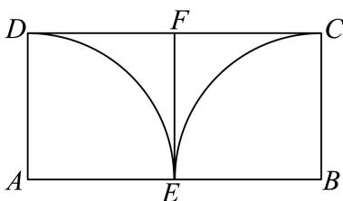

基础解集、定义域与符号分类
关注分母、真数与开闭端点；含参数时分别处理符号。
嘉定 · 第1题 ★☆☆☆☆ · 教师预估
本题资料或解析有待核事项，预览不可作为已审定成品。
函数 y=log2(x2−1) )的定义域为
嘉定 · 第8题 ★★☆☆☆ · 教师预估
本题资料或解析有待核事项，预览不可作为已审定成品。
已知数列 {an} 的通项公式为 ∣an=−n+c, ，其中c为常数，设数列 {an} 的前n项和为 Sn ，若 S6>S5 且S6>S7 ，则c的取值范围为
嘉定 · 第9题 ★★★☆☆ · 教师预估
本题资料或解析有待核事项，预览不可作为已审定成品。
已知 f(x)=ln(x+1),g(x)={f(−x),x<0,f(x),x≥0 则 ∣g(x)>x+2− e的解集为
嘉定 · 第13题 ★★☆☆☆ · 教师预估
本题资料或解析有待核事项，预览不可作为已审定成品。
已知a为正数，则 ∗a>3∗ 是 aa>a3, 的（ ）.
A. 充分非必要条件
B. 必要非充分条件
C. 充要条件
D. 既非充分也非必要条件
奉贤 · 第3题 ★☆☆☆☆ · 教师预估
本题资料或解析有待核事项，预览不可作为已审定成品。
已知x ∈ R，则不等式 x2−x+2> 0的解集为
奉贤 · 第17题 ★★★☆☆ · 教师预估
本题资料或解析有待核事项，预览不可作为已审定成品。
已知函数 y=f(x) ，其中 f(x)=ax （常数 [a>0 且 .a=1) ）
(1) (6分)若函数 ⋅y=f(x) 的图象过点(2,9)，求关于x的不等式 f(∣2x−1∣)> 3的解集；
(2) (8分)若存在 Φ:x∈(0,1] ，使得数列f (1)、f (tx)、 f(x2+2) 是等比数列，求实数t的取值范围.
崇明 · 第2题 ★☆☆☆☆ · 教师预估
不等式 2x+1x−1< 0的解为
徐汇 · 第1题 ★☆☆☆☆ · 教师预估
本题资料或解析有待核事项，预览不可作为已审定成品。
不等式 x2−4x+3<0 的解集是
杨浦 · 第3题 ★☆☆☆☆ · 教师预估
本题资料或解析有待核事项，预览不可作为已审定成品。
不等式 x−1x+2< 0的解集为
杨浦 · 第5题 ★★☆☆☆ · 教师预估
本题资料或解析有待核事项，预览不可作为已审定成品。
已知 ∣∣x+3∣+∣x−5∣=8 ，则实数x的取值范围为
杨浦 · 第13题 ★★☆☆☆ · 教师预估
本题资料或解析有待核事项，预览不可作为已审定成品。
已知实数 [a=0, ，则 ∗a>2∗ 是 ¨a 1 <2 1 ”的（ ）条件.
A. 充分非必要
B. 必要非充分
C. 充分必要
D. 既非充分也非必要
松江 · 第3题 ★★☆☆☆ · 教师预估
本题资料或解析有待核事项，预览不可作为已审定成品。
函数 y=log(3x+1)+1 −x的定义域是
浦东 · 第8题 ★★☆☆☆ · 教师预估
本题资料或解析有待核事项，预览不可作为已审定成品。
已知函数 y=f(x) 的表达式为 f(x)={(21)x−3,x≤0x2,x>0 ，则不等式 f(x)≤1 的解集为
虹口 · 第2题 ★★☆☆☆ · 教师预估
函数 y=lnx−1x 的定义域是
虹口 · 第8题 ★★★☆☆ · 教师预估
本题资料或解析有待核事项，预览不可作为已审定成品。
已知f(x)={x2−x,f(−x),x≥0,x<0,则f(x)≤6的解集是____。
长宁 · 第1题 ★☆☆☆☆ · 教师预估
设全集为R，集合 A={x∣x2−2x−3≥0} ，则A = –
长宁 · 第9题 ★★★☆☆ · 教师预估
已知 α:2x+log2x≤2, β: x<m ，若α是β的充分条件，则实数m的取值范围是
闵行 · 第2题 ★☆☆☆☆ · 教师预估
不等式 x−12x−1< 0的解集为
闵行 · 第15题 ★★★★☆ · 教师预估
设f (x)=(sinx−cosx)(cosx−tanx)(tanx−sinx) ，若α、β为同一象限的角，且不存在α、β，使得 f(α)f(β)<0. ，则α、β所在的象限为（ ）
A. 第一象限
B. 第二象限
C. 第三象限
D. 第四象限
青浦 · 第3题 ★☆☆☆☆ · 教师预估
本题资料或解析有待核事项，预览不可作为已审定成品。
不等式 x+1x−3≥2的解集为
静安 · 第2题 ★☆☆☆☆ · 教师预估
不等式 ∣2x−1∣<3 的解集为
静安 · 第17题 ★★★☆☆ · 教师预估
设函数 ∇⋅f(x)=x+x4,x∈(−∞,0)∪(0,+∞).
(1) (6分)求函数 ⋅y=f(x) 的单调区间；
(2) (8分)求不等 ∄f(x)<2x 的解集.
黄浦 · 第2题 ★☆☆☆☆ · 教师预估
不等式x2 − 3x + 2 < 0的解集为
黄浦 · 第9题 ★★☆☆☆ · 教师预估
若 f(x)=x3,g(x)={f(x),x≥0,f(−x),x<0 则不等 ∄∨g(x)<−x 的解集为
均值不等式、作差与最值
从定和定积及结构约束选择基本不等式或作差，检验等号条件。
崇明 · 第6题 ★☆☆☆☆ · 教师预估
已知x,y为正实数，且满足 4x+y=40 ，则x⋅y的最大值是
杨浦 · 第9题 ★★★☆☆ · 教师预估
本题资料或解析有待核事项，预览不可作为已审定成品。
将一个半径为1的球形石材加工成一个圆柱形摆件，则该圆柱形摆件侧面积的最大值为
松江 · 第13题 ★★☆☆☆ · 教师预估
本题资料或解析有待核事项，预览不可作为已审定成品。
已知 ∣a>b>0 ，以下四个数中最大的是（ ）
A. b
B. ab
C. 2a+b
D. 2a2+b2
浦东 · 第6题 ★★☆☆☆ · 教师预估
本题资料或解析有待核事项，预览不可作为已审定成品。
已知实数a、b满足 a+2b=1 ，则 3a+9b 的最小值为
长宁 · 第10题 ★★★☆☆ · 教师预估
若正实数a,b满足 ∴ab=2a+b ，则a+2b的最小值是
闵行 · 第4题 ★☆☆☆☆ · 教师预估
已知正实数a、b满足ab = 1，则 a1+b1 的最小值为
青浦 · 第20题 ★★★★☆ · 教师预估
本题资料或解析有待核事项，预览不可作为已审定成品。
已知椭圆 C:4x2+3y2=1,F 为椭圆 C的右焦点，过点F的直线 l交椭圆 C于A、B两点.

(1) (4分)若直线 l垂直于 x轴，求椭圆 C的弦AB的长度；
(2) (6分)设点P (−3, 0)，当 ∠PAB=90∘ 时，求点A的坐标；
(3) (8分)设点M (3, 0)，记 MA 、 MB的斜率分别为 ∣k1 和 k2 ，求 k1+k2 的取值范围.
静安 · 第8题 ★★☆☆☆ · 教师预估
若用t替换命题“对于任意实数d，有 d˙2≥0 ，且等号当且仅当d = 0时成立”中的d，即可推出平均值不等式“任意两个正数的算术平均值不小于它们的几何平均值，且等号当且仅当这两个正数相等时成立”.则t =
黄浦 · 第6题 ★★☆☆☆ · 教师预估
若正数x、y满足 x+4y=1 ，则xy的最大值为
大小比较、绝对值与离散最值
利用倒数比较、三角不等式或反例辨析逻辑；连续整数作代换后求离散最小值，保留量词与整数条件。
奉贤 · 第16题 ★★★★☆ · 教师预估
本题资料或解析有待核事项，预览不可作为已审定成品。
已知数列 {an} 不是常数列，前n项和为 Sn, an>0 ．若对任意正整数n，存在正整数m，使得∣Sn−am∣<a1 ，则称 {an} 是“可控数列”．现给出两个命题：
①若各项均为正整数的等差数列 {an} 满足公差 d=3 ，则 {an} 是“可控数列”；
②若等比数列 {an} 是“可控数列”，则其公比 q∈(0,21]
则下列判断正确的是（ ）
A. ①与②均为真命题
B. ①与②均为假命题
C. ①为假命题，②为真命题
D. ①为真命题，②为假命题
宝山 · 第13题 ★★☆☆☆ · 教师预估
设 ⋅ab>0 ,则 ∗a>b′′ ¨a . <b 1 , ”的（ ）
A. 充分非必要条件
B. 必要非充分条件
C. 充分必要条件
D. 既非充分也非必要条件
普陀 · 第12题 ★★★★☆ · 教师预估
本题资料或解析有待核事项，预览不可作为已审定成品。
设 a>b>0 ，函数 y=f(x) 的表达式为 f(x)= x−x1+lnx ，若 f(a)=f(b) ，且关于x的方程x2+ax+2ab+x2−ax+2ab=2a∣x∣ 的整数解有且仅有4个，则a的取值范围是
松江 · 第9题 ★★☆☆☆ · 教师预估
本题资料或解析有待核事项，预览不可作为已审定成品。
已知函数 y=f(x) 的表达式为 f(x)={3x3x,x≥0,1} 则满足 f(m)≥f(m+2) 的实数m的最大值为
浦东 · 第13题 ★★☆☆☆ · 教师预估
本题资料或解析有待核事项，预览不可作为已审定成品。
若实数a、b满足 a2>b2 ，下列不等式中恒成立的是（ ）
A. a>b
B. a1<b1
C. a2+b2>2ab
D. a>∣b∣
金山 · 第9题 ★★☆☆☆ · 教师预估
在(0, 2π)内，使 isinx≥cosx 成立的x的取值范围是
金山 · 第14题 ★★☆☆☆ · 教师预估
若 ∗x>a∗ 是 x2−2x−3<0, 的必要不充分条件，则实数a的取值范围是（ ）
A. (−∞−1)
B. (−∞−1]
C. (−1,+∞)
D. [−1,+∞)
青浦 · 第13题 ★★☆☆☆ · 教师预估
本题资料或解析有待核事项，预览不可作为已审定成品。
已知x, y∈R 且满足 x>y: ，则下列关系式恒成立的是（ ）.
A. x2+11<y2+11
B. ln(x2+1)>ln(y2+1)
C. sinx>siny
D. x3>y3
静安 · 第12题 ★★☆☆☆ · 教师预估
已知lg x1⋅ lg x2､ lg x3､ lg x4, ､ lg x5 是从大到小连续的正整数，且 (lgx4)2<lgx1⋅lgx5 ，则 ∣x1 1的最小值为
静安 · 第13题 ★☆☆☆☆ · 教师预估
设 [a,b∈R, ，则 ∗a+b>0∗ 是 ρˉ∗a>0 且 .b>0∗ 的（ ）
A. 充分非必要条件
B. 必要非充分条件
C. 充要条件
D. 既非充分又非必要条件
含参恒成立与函数证明
把全域不等式转为最值、单调性或导数比较，兼顾参数边界。
宝山 · 第21题 ★★★★★ · 教师预估
本题资料或解析有待核事项，预览不可作为已审定成品。
…
已知 y=f(x),y=g(x) 都是定义在实数集上的可导函数. 对于正整数k，当m、n分别是y = f(x)和y=g(x) 的驻点时，记 Δx=∣m−n∣; ，若 Δx≤k ，则称f(x)和g(x)满足P(k)性质；当x1、 x2∈R 且 g(x1)=g(x2) 时，记 Δy=g(x1)−g(x2)f(x1)−f(x2) ，若 Δy≥k ，则称f(x)和g(x)满足Q(k)性质
(1) (4分)若f(x) = 2x + 1，g(x) = x，判断f(x)和g(x)是否满足Q(2)性质，并说明理由；
(2) (6分)若 f(x)=(x−1)2,g(x)=exax+1 ，且f(x)和g(x)满足P(1)性质，求实数a的取值范围；
(3) (8分)若y = f(x)的最小正周期为4，且g(−1) = f(−1)，g(1) = f(1).当 x∈[−1,3]H 时，y = f(x)的驻点与其两侧区间的部分数据如下表所示：
| x |
−1 |
(−1,1) |
1 |
(1,3) |
3 |
| f′(x) |
0 |
+ |
0 |
− |
0 |
| f(x) |
极小值−1 |
|
极大值1 |
|
极小值−1 |
已知f(x)和g(x)满足Q(k)性质，请写 Hf(x)=g(x) 的充要条件，并说明理由.
普陀 · 第21题 ★★★★★ · 教师预估
本题资料或解析有待核事项，预览不可作为已审定成品。
设t > 1，n ≥ 1， n∈N: ，若正项数列 {an} 满足 t1an<an+1<an. ，则称数列 {an} 具有性质 ∂∗P(t)∗
(1) (4分)设 m≥1,m∈N ，若数列10，7，m，4，3具有性质 ∗P(2)∗ ，求满足条件的m的值；
(2) (6分)设数列{a }的通项公式为 {an} ∣an=(n+1)(9t)n ，问是否存在t使得数列 {an} 具有性质 ∗P(t) ”？若存在，求出满足条件的t的取值范围，若不存在，请说明理由；
(3) (8分)设函数y = f (x)的表达式为 f(x)=ln(ex−1)−lnx ，数列 {an} 的前n项和为 Sn ，且满足 a1=32,an+1=f(an) ，证明：数列 {an} 具有性质 ∗P(3)∗ ，并比较 Sn 与 1−3n1 的大小.
长宁 · 第21题 ★★★★★ · 教师预估
本题资料或解析有待核事项，预览不可作为已审定成品。
双曲余弦函数 coshx=2ex+e−x ，双曲正弦函数 sinhx=2ex−e−x
(1) (4分)求函数 coshx=2ex+e−x 的单调增区间；
(2) (6分)若函数 Δy=cosh2x−asinhx 在 [0,+∞) 上的最小值是 41 ，求实数a的值；
(3) (8分)对任意 x∈R,cosh(x)≥cosx+mx2 恒成 Γ˙, ，求实数m的取值范围
青浦 · 第11题 ★★★☆☆ · 教师预估
本题资料或解析有待核事项，预览不可作为已审定成品。
若函数 ⟨y=log21(ax2−8x+15) 在区间(1,2)上严格增，则实数a的取值范围
青浦 · 第21题 ★★★★★ · 教师预估
本题资料或解析有待核事项，预览不可作为已审定成品。
已知函数 ⋅y=f(x) ，其中 f(x)=ex−1−2lnx+x
(1) (4分)求函 L¨∇y=f(x) 的单调区间；
(2) (6分)设函数 [g(x)=f(x)+2lnx ，问:函数 (y=g(x) 的图像上是否存在三点A,B,C，使得它们的横坐标成等差数列，且直线 AC的斜率等于 y=g(x) 在点B处的切线的斜率? 若存在，求出所有满足条件的点B的坐标;若不存在，说明理由;
(3) (8分)证明: 函数 ⋅y=f(x) 图像上任意一点都不落在函数 ⟨y=(x−2)3−3(x−2) 图像的下方
几何约束、建模与范围优化
将投影、周长、面积或报价约束转为可复核的不等式模型。
宝山 · 第11题 ★★★☆☆ · 教师预估
本题资料或解析有待核事项，预览不可作为已审定成品。
…
某物流公司为了扩大业务量，计划改造一间高为6米，底面积为24平方米，且背面靠墙的长方体形状的仓库.因仓库的背面靠墙，无须建造费用，设仓库前面墙体的长为x米 (4≤x≤6) .现有甲、乙两支工程队参加竞标，甲队的报价方案为：仓库前面新建墙体每平方米400元，左右两面新建墙体每平方米300元，屋顶和地面以及其他共计28800元；乙队给出的整体报价为
(1+x2) ×6k×104T (k>0) .不考虑其他因素，若乙队要确保竞标成功，则实数k的取值范围 是
宝山 · 第12题 ★★★★☆ · 教师预估
本题资料或解析有待核事项，预览不可作为已审定成品。
已知平面向量a、b满足∣a∣=1，∣b∣=m∈(1,2)，且对任意单位向量c，都有∣a⋅c∣+∣b⋅c∣≤6，则a⋅b的最大值为______。（用含m的式子表示）
宝山 · 第18题 ★★★☆☆ · 教师预估
本题资料或解析有待核事项，预览不可作为已审定成品。
…
在 △ABC 中，已知 162+c2=a2+bc
(1) (6分)若 sin˙C=2sinB ，且 b=2 ，求 △ABC 的面积；
(2) (8分)若 b˙+c=1 ,求a的取值范围.
虹口 · 第17题 ★★★☆☆ · 教师预估
设 f(x)=sinωx(ω>0)
(1) (6分)当函数 ⋅y=f(x) 的最小正周期为2π时，求 y˙=f(x)+cos x在 [0,2π] 上的最大值；
(2) (8分)若ω = 2，且在 △ABC♯ ，角A、B、C所对的边长为a、b、c，锐角A满足
f(A+6π)=0,AB⋅AC=4 ，求a的最小值
金山 · 第10题 ★★★☆☆ · 教师预估
某海滨浴场平面图是如图所示的半圆，其中O是圆心，直径MN为400米，P是弧MN的中点．一个急救中心A在栈桥OP中点上，计划在弧NP上设置一个瞭望台B，并在AB间修建浮桥．已知 ∠ABO 越大，瞭望台B处的视线范围越大，则B处的视线范围最大时，AB的长度为 米．（结果精确到1米）

金山 · 第20题 ★★★★☆ · 教师预估
本题资料或解析有待核事项，预览不可作为已审定成品。
已知椭圆 Γ1:4x2+3y2=1 ，抛物线 Γ2:y2=2px(p>0) 与 Γ1 有一个相同的焦点F．过点F作互相垂直的两条直线l与l′，直线 ∣E∣Γ1 交于点A、 B, ，直线l′与 Γ2 交于点C、D
(1) (4分)求椭圆 Γ1 的离心率及抛物线 Γ2 的方程；
(2) (6分)若直线l的倾斜角为 43π ，求AB中点M的坐标；
(3) (8分)四边形ACBD的面积是否存在最小值，若存在，求出最小值；若不存在，请说明理由
闵行 · 第11题 ★★★★☆ · 教师预估
如图，某小区内有一块矩形区域ABCD，其中AB = 40米，AD = 20米，点E、F分别为AB、CD的中点，左右两个扇形区域为花坛（两个扇形的圆心分别为A、B，半径均为20米），其余区域为草坪．现规划在草坪上修建一个三角形的儿童游乐区，且三角形的一个顶点在线段 EF− 上，另外两个顶点在线段CD上，则该游乐区面积的最大值为 平方米．（结果保留整数）
